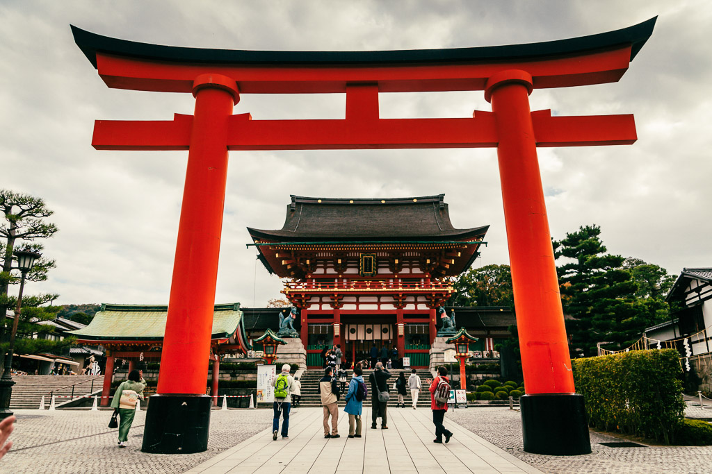

¿Quienes somos?
¡Somos Turismo en Japon, tu guía definitiva para explorar la fascinante tierra del sol naciente: Japón! Sumérgete en una experiencia única llena de tradición, tecnología innovadora y una rica diversidad cultural que cautiva a viajeros de todo el mundo.
¡Los mejores lugares para visitar!
Tokio
La capital de Japón es una metrópolis dinámica y vibrante que combina la modernidad con la tradición. Tokio ofrece una amplia gama de atracciones, desde rascacielos futuristas y distritos de compras como Shibuya y Ginza hasta templos históricos como el Senso-ji en Asakusa y el Palacio Imperial.
Actividades que puedes hacer en Tokio
- Explorar barrios únicos: Sumérgete en la diversidad de Tokio explorando barrios como Shibuya, Shinjuku, Harajuku y Ginza, cada uno con su propio carácter y atracciones distintivas.
- Compras: Desde grandes almacenes de lujo hasta mercados callejeros, Tokio es un paraíso para los amantes de las compras. Explora lugares como Takeshita Street en Harajuku para la moda joven y exclusiva, o los grandes almacenes de Ginza para productos de alta gama.
- Disfrutar de la gastronomía: Prueba la deliciosa y variada comida japonesa en los numerosos restaurantes, puestos de comida callejera y mercados de pescado de la ciudad. No te pierdas la experiencia de comer sushi fresco en el Mercado de Pescado de Tsukiji.
- Visitar museos y galerías de arte: Tokio alberga una gran cantidad de museos y galerías de arte que exhiben desde arte tradicional japonés hasta arte contemporáneo internacional. Algunos de los museos más destacados incluyen el Museo de Arte Mori, el Museo Nacional de Tokio y el Museo Edo-Tokyo.
- Explorar la vida nocturna: Tokio cobra vida por la noche con una variedad de bares, izakayas (tabernas japonesas) y clubes nocturnos. Disfruta de una cena y bebidas en Golden Gai en Shinjuku, o vive la experiencia de karaoke en uno de los muchos establecimientos de la ciudad.
- Relajarse en parques y jardines: Escapa del bullicio de la ciudad y disfruta de la tranquilidad de los hermosos parques y jardines de Tokio, como el Parque Ueno, el Jardín Nacional Shinjuku Gyoen y el Jardín Hamarikyu.
Atracciones de Tokio
- Torre de Tokio: Inspirada en la Torre Eiffel de París, la Torre de Tokio ofrece vistas panorámicas impresionantes de la ciudad desde su plataforma de observación.
- Barrio de Shibuya: Famoso por el cruce peatonal más concurrido del mundo, el cruce de Shibuya, este distrito es un centro de compras, entretenimiento y cultura juvenil.
- Templo Senso-ji: Es el templo más antiguo de Tokio y uno de los más venerados. Está ubicado en el animado distrito de Asakusa y cuenta con una puerta de entrada majestuosa, callejuelas comerciales y un ambiente tradicional.
- Distrito de Akihabara: Conocido como el paraíso de la electrónica y la cultura otaku, Akihabara es el lugar ideal para los amantes de los videojuegos, los mangas, el anime y la tecnología.
- Parque Ueno: Uno de los parques más grandes de Tokio, ofrece una variedad de atracciones, como el Zoológico de Ueno, el Museo Nacional de Tokio y hermosos jardines para pasear.
- Distrito de Odaiba: Una isla artificial en la bahía de Tokio, Odaiba es conocida por sus centros comerciales, parques temáticos, como el famoso Gundam Statue y el parque de diversiones Palette Town.
- Palacio Imperial: Residencia oficial del Emperador de Japón, este complejo cuenta con hermosos jardines abiertos al público y ofrece una visión de la historia y la cultura japonesa.
Consejos de viaje para Tokio
- Planifica con anticipación: Investiga sobre los lugares que te gustaría visitar, actividades que te interesen y opciones de transporte. Reserva alojamiento y entradas a atracciones con anticipación, especialmente durante las temporadas turísticas altas.
- Obtén un pase de transporte: Considera adquirir un pase de transporte como el Tokyo Subway Ticket o el Japan Rail Pass si planeas hacer muchos desplazamientos en tren por la ciudad y sus alrededores. Esto puede ahorrarte dinero y facilitar tu movilidad.
- Aprende algunas frases básicas en japonés: Aunque muchos japoneses hablan inglés básico, aprender algunas frases simples en japonés puede ser útil y apreciado. Palabras como "hola" (こんにちは - Konnichiwa) y "gracias" (ありがとうございます - Arigatou gozaimasu) pueden ser útiles.
- Respeta las costumbres locales: La etiqueta y el respeto por la cultura japonesa son importantes. Asegúrate de seguir las normas de comportamiento, como no hablar en voz alta en el transporte público, no fumar en lugares no designados y no dejar propinas en restaurantes.
- Prepárate para caminar: Tokio es una ciudad grande y muchas atracciones están dispersas. Usa calzado cómodo y prepárate para caminar largas distancias, especialmente al explorar barrios como Shibuya y Shinjuku.
- Ten en cuenta el clima: El clima en Tokio puede variar significativamente según la temporada. Asegúrate de revisar el pronóstico del tiempo antes de viajar y llevar la ropa adecuada, especialmente durante el verano, que puede ser caluroso y húmedo, o el invierno, que puede ser frío.
- Mantén la etiqueta al usar el transporte público: En el metro y los trenes, evita hablar por teléfono, comer o beber, y asegúrate de ceder el asiento a personas mayores o discapacitadas.
- Ten cuidado con el horario de cierre: Algunas atracciones, tiendas y restaurantes pueden cerrar temprano, así que asegúrate de verificar los horarios de funcionamiento y planificar en consecuencia.
Tokio de noche

Tokio de dia
Calles de Tokio
Kioto
Conocida como la antigua capital de Japón, Kioto es famosa por sus numerosos templos, santuarios, jardines y palacios imperiales. Lugares emblemáticos como el Templo Kinkaku-ji (Pabellón Dorado), el Templo Kiyomizu-dera y el Bosque de Bambú de Arashiyama atraen a millones de visitantes cada año.
Actividades de Kioto
- Visitar templos y santuarios: Kioto es famosa por sus numerosos templos y santuarios, muchos de los cuales son Patrimonio de la Humanidad. Algunos de los más populares incluyen el Templo Kinkaku-ji (Pabellón Dorado), el Templo Kiyomizu-dera, el Santuario Fushimi Inari-taisha y el Templo Ginkaku-ji (Pabellón Plateado).
- Explorar el Barrio de Gion: Conocido como el distrito de las geishas, Gion es un lugar fascinante para explorar. Pasea por las calles empedradas y admira las antiguas casas de té y restaurantes tradicionales. Si tienes suerte, es posible que veas a una maiko (aprendiz de geisha) paseando por la zona.
- Pasear por el Bosque de Bambú de Arashiyama: Disfruta de un tranquilo paseo entre los altos y majestuosos bambúes en Arashiyama. Este hermoso bosque es un lugar popular para relajarse y tomar fotografías impresionantes.
- Tomar un paseo en barco por el Río Katsura: Disfruta de las vistas panorámicas de Kioto desde el agua mientras navegas por el Río Katsura en un tradicional bote de paseo.
- Participar en una ceremonia del té: Sumérgete en la cultura japonesa participando en una ceremonia del té, una experiencia serena y contemplativa que te permite disfrutar del arte de preparar y servir té matcha.
- Explorar el Castillo Nijo: Visita el Castillo Nijo, un castillo histórico que cuenta con impresionantes jardines, pinturas murales y puertas chirriantes que fueron diseñadas para alertar sobre la presencia de intrusos.
- Recorrer los mercados y tiendas tradicionales: Explora los mercados y tiendas de Kioto para comprar recuerdos, artesanías locales, productos alimenticios tradicionales y más. El Mercado Nishiki y el Mercado de Kyogoku son lugares populares para disfrutar de la experiencia de compras.
Atracciones de Kioto
- Templo Kinkaku-ji (Pabellón Dorado): Este templo zen es famoso por su impresionante pabellón cubierto de pan de oro, que se refleja en las aguas del estanque Kyokochi. Es uno de los lugares más icónicos de Kioto y atrae a numerosos visitantes cada año.
- Templo Kiyomizu-dera: Situado en una colina con vistas panorámicas de la ciudad, el Templo Kiyomizu-dera es conocido por su plataforma de madera que se extiende sobre el borde de la colina. El templo es especialmente hermoso durante la temporada de sakura (cerezos en flor) y la temporada de momiji (hojas de otoño).
- Santuario Fushimi Inari-taisha: Este impresionante santuario sintoísta es famoso por sus miles de torii (puertas sagradas) que forman túneles a lo largo de los senderos de la montaña Inari. Es uno de los santuarios más importantes de Japón y una visita obligada en Kioto.
- Barrio de Gion: Conocido como el distrito de las geishas, Gion es famoso por sus antiguas casas de té, calles empedradas y la posibilidad de ver a maikos (aprendices de geisha) paseando por la zona. Es un lugar fascinante para explorar la cultura tradicional de Japón.
- Templo Ginkaku-ji (Pabellón Plateado): Aunque no está cubierto de plata como su contraparte dorada, el Templo Ginkaku-ji es igualmente impresionante. Rodeado de exquisitos jardines paisajísticos, este templo es un ejemplo destacado de la arquitectura y la jardinería japonesas.
- Bosque de Bambú de Arashiyama: Este hermoso bosque de bambú ofrece un tranquilo escape de la ciudad. Pasea por los senderos entre los altos y majestuosos bambúes, y disfruta de la serenidad y la belleza natural.
- Castillo Nijo: Construido en el siglo XVII, el Castillo Nijo es un importante patrimonio histórico de Kioto. El castillo cuenta con impresionantes puertas chirriantes diseñadas para alertar sobre la presencia de intrusos, así como exquisitos jardines y pinturas murales.
Consejos de viaje para Kioto
- Planifica con anticipación: Investiga sobre las atracciones que te interesan y planifica tu itinerario con anticipación. Kioto tiene muchas atracciones, así que decide qué lugares te gustaría visitar y cómo te gustaría distribuir tu tiempo.
- Usa un pase de transporte: Considera adquirir un pase de transporte como el Kioto City Bus One-Day Pass o el Kioto Sightseeing Card. Estos pases te permitirán viajar de manera ilimitada en autobuses y trenes dentro de la ciudad y te ayudarán a ahorrar dinero en transporte.
- Aprende algunas frases básicas en japonés: Aunque muchos lugares turísticos en Kioto tienen personal que habla inglés, aprender algunas frases básicas en japonés puede ser útil y apreciado. Palabras simples como "hola" (こんにちは - Konnichiwa) y "gracias" (ありがとうございます - Arigatou gozaimasu) pueden hacer que tu experiencia sea más agradable.
- Viste apropiadamente para los templos y santuarios: Al visitar templos y santuarios en Kioto, es importante vestirse de manera apropiada y respetuosa. Esto significa cubrir los hombros y las piernas, y evitar ropa demasiado ajustada o reveladora.
- Prepárate para caminar: Muchas de las atracciones de Kioto están ubicadas a cierta distancia entre sí, por lo que es importante llevar calzado cómodo y estar preparado para caminar largas distancias. También considera alquilar una bicicleta para moverte más rápido por la ciudad.
- Reserva con anticipación durante la temporada alta: Si planeas visitar Kioto durante la temporada alta, como la floración de los cerezos en primavera o las hojas de otoño, asegúrate de reservar alojamiento y entradas a atracciones con anticipación, ya que los lugares populares tienden a llenarse rápidamente.
- Respeta la cultura y las costumbres locales: La etiqueta y el respeto por la cultura japonesa son importantes en Kioto. Asegúrate de seguir las normas de comportamiento, como mantener un tono de voz bajo en lugares públicos y respetar las tradiciones locales en templos y santuarios.
Templo kinkakuji

Templo Kiyomizu-dera

Santuario Fushimi Inari
Hiroshima
Hiroshima es conocida por ser el sitio de uno de los eventos más trágicos de la historia, el bombardeo atómico de 1945. El Parque Conmemorativo de la Paz de Hiroshima y el Museo Conmemorativo de la Paz de Hiroshima son destinos importantes para aprender sobre la historia y la paz mundial.
Actividades que puedes hacer en Hiroshima
- Visitar el Parque Conmemorativo de la Paz de Hiroshima: Este parque es un lugar de reflexión y conmemoración dedicado a las víctimas del bombardeo atómico de Hiroshima en 1945. Aquí encontrarás el Monumento a la Paz, el Museo Conmemorativo de la Paz de Hiroshima y el Domo de la Bomba Atómica, que son lugares emblemáticos de la ciudad.
- Explorar el Castillo de Hiroshima: También conocido como Castillo de Carpas, este castillo reconstruido ofrece vistas panorámicas de la ciudad desde sus torres. Dentro del castillo, hay un museo que exhibe artefactos históricos relacionados con el período feudal de Japón.
- Caminar por el Barrio de Shukkeien: Este hermoso jardín japonés es un oasis de tranquilidad en el corazón de la ciudad. Pasea por sus senderos serpenteantes, cruza sus puentes de arco y disfruta de la belleza natural y la arquitectura paisajística.
Atracciones de Hiroshima
- Parque Conmemorativo de la Paz de Hiroshima: Este parque es un monumento a las víctimas del bombardeo atómico de Hiroshima en 1945. Alberga el icónico Monumento a la Paz de Hiroshima, el Museo Conmemorativo de la Paz de Hiroshima y el Domo de la Bomba Atómica, que son lugares emblemáticos de la ciudad y testigos de la historia.
- Museo Conmemorativo de la Paz de Hiroshima: Este museo ofrece una conmovedora exhibición sobre los eventos del bombardeo atómico y sus impactos devastadores. A través de artefactos, fotografías y relatos de sobrevivientes, el museo busca promover la paz y recordar las terribles consecuencias de la guerra.
- Domo de la Bomba Atómica: También conocido como Genbaku Dome, este edificio fue uno de los pocos que quedaron en pie después del bombardeo atómico. Hoy en día, se conserva como un símbolo de paz y es Patrimonio de la Humanidad de la UNESCO.
- Castillo de Hiroshima: Este castillo reconstruido es conocido como el Castillo de las Carpas debido a su diseño que recuerda a un pez dorado. En su interior, alberga un museo que exhibe artefactos relacionados con la historia del castillo y la región.
- Jardín Shukkeien: Este hermoso jardín japonés ofrece un oasis de tranquilidad en el corazón de la ciudad. Pasea por sus senderos serpenteantes, cruza sus puentes de arco y admira la belleza natural y la arquitectura paisajística.
- Templo Mitaki-dera: Ubicado en las afueras de la ciudad, este tranquilo templo ofrece una escapada serena de la vida urbana. Disfruta de un paseo por los senderos del bosque y admira las hermosas vistas de los alrededores.
Consejos de viaje para Hiroshima
- Visita el Parque Conmemorativo de la Paz de Hiroshima con respeto: Este parque es un lugar dedicado a la paz y la memoria de las víctimas del bombardeo atómico de 1945. Al caminar por el parque y visitar sus monumentos, asegúrate de mostrar respeto y reflexión.
- Planifica tu visita al Museo Conmemorativo de la Paz de Hiroshima con anticipación: El museo puede ser emocionalmente desafiante debido a su contenido sobre el bombardeo atómico y sus consecuencias. Prepárate mentalmente y considera dedicar tiempo suficiente para recorrerlo con calma y comprensión.
- Prueba la gastronomía local: Hiroshima ofrece una variedad de platos deliciosos, incluido el famoso okonomiyaki (una especie de panqueque japonés) y el tsukemen (fideos sumergidos en salsa). Aprovecha la oportunidad para probar la cocina local mientras estás en la ciudad.
- Aprende sobre la historia de la ciudad: Además de los sitios relacionados con la Segunda Guerra Mundial, Hiroshima tiene una rica historia y cultura. Tómate el tiempo para explorar otros lugares de interés, como el Castillo de Hiroshima y el Templo Mitaki-dera.
- Utiliza el transporte público: Hiroshima cuenta con un sistema de transporte público eficiente que incluye tranvías y autobuses. Considera adquirir un pase de un día para hacer viajes ilimitados y explorar la ciudad de manera conveniente.
- Visita Miyajima: Aprovecha la cercanía de la isla de Miyajima, que está a solo un corto viaje en ferry desde el centro de Hiroshima. El Santuario Itsukushima y el monte Misen son destinos populares en la isla y valen la pena visitar.
- Respeta las costumbres locales: Como en cualquier lugar de Japón, es importante mostrar respeto por las costumbres y la cultura locales. Mantén un tono de voz bajo en lugares públicos, respeta las normas de comportamiento y sigue las indicaciones de los letreros y las autoridades locales.